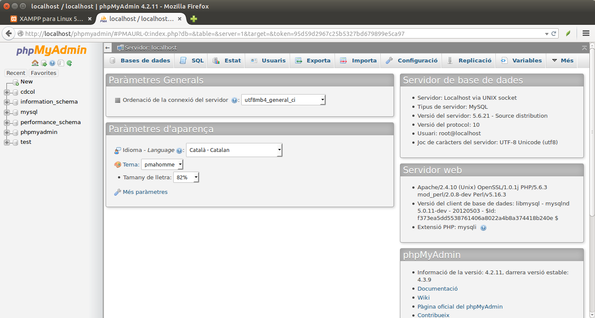

3.1 - MySQL
Per a utilitzar i administrar MySQL o MariaDB, XAMPP ens proporciona PhpMyAdmin, que és sense dubte el mètode més habitual per a utilitzar i administrar ambdós. Podem accedir des d'un navegador, a l'adreça http://localhost/phpmyadmin

Introduirem unes dades, que seran les de sempre, les de les rutes: la taula RUTES i la taula PUNTS.
Per a això:
- Creem una nova Base de Dades anomenada Rutes (Bases de dades --> Crear base de dades)
- Ens situem dins de la BD Rutes i anem a SQL, on copiem i executem les següents sentències (poden anar totes juntes)
CREATE TABLE RUTES ( num_r INTEGER PRIMARY KEY, nom_r TEXT, desn INTEGER, desn_acum INTEGER );
INSERT INTO RUTES VALUES(1,'Pujada a Penyagolosa',530,530);
INSERT INTO RUTES VALUES(2,'La Magdalena',51,84);
INSERT INTO RUTES VALUES(3,'Pelegrins de Les Useres',896,1738);
CREATE TABLE PUNTS ( num_r INTEGER REFERENCES RUTES(num_r), num_p INTEGER , nom_p TEXT, latitud REAL, longitud REAL ,PRIMARY KEY (num_r,num_p) );
INSERT INTO PUNTS VALUES(1,1,'Sant Joan',40.251036,-0.354223);
INSERT INTO PUNTS VALUES(1,2,'Encreuament',40.25156,-0.352507);
INSERT INTO PUNTS VALUES(1,3,'Barranc de la Pegunta',40.247318,-0.351713);
INSERT INTO PUNTS VALUES(1,4,'El Corralico',40.231708,-0.348859);
INSERT INTO PUNTS VALUES(1,5,'Penyagolosa',40.222632,-0.350339);
INSERT INTO PUNTS VALUES(2,1,'Primer Molí',39.99385,-0.032941);
INSERT INTO PUNTS VALUES(2,2,'Segon Molí',39.99628,-0.029427);
INSERT INTO PUNTS VALUES(2,3,'Caminàs',40.00513,-0.022569);
INSERT INTO PUNTS VALUES(2,4,'Riu Sec',40.006765,-0.02237);
INSERT INTO PUNTS VALUES(2,5,'Sant Roc',40.017906,-0.02289);
INSERT INTO PUNTS VALUES(2,6,'Explanada',40.034048,-0.00633);
INSERT INTO PUNTS VALUES(2,7,'La Magdalena',40.034519,-0.005856);
INSERT INTO PUNTS VALUES(3,1,'Les Useres',40.158126,-0.166962);
INSERT INTO PUNTS VALUES(3,2,'Les Torrocelles',40.196046,-0.227611);
INSERT INTO PUNTS VALUES(3,3,'Lloma Bernat',40.21921,-0.26356);
INSERT INTO PUNTS VALUES(3,4,'Xodos (Molí)',40.248003,-0.29669);
INSERT INTO PUNTS VALUES(3,5,'El Marinet',40.250977,-0.316947);
INSERT INTO PUNTS VALUES(3,6,'Sant Joan',40.251221,-0.354052);
Llicenciat sota la Llicència Creative Commons Reconeixement NoComercial CompartirIgual 2.5